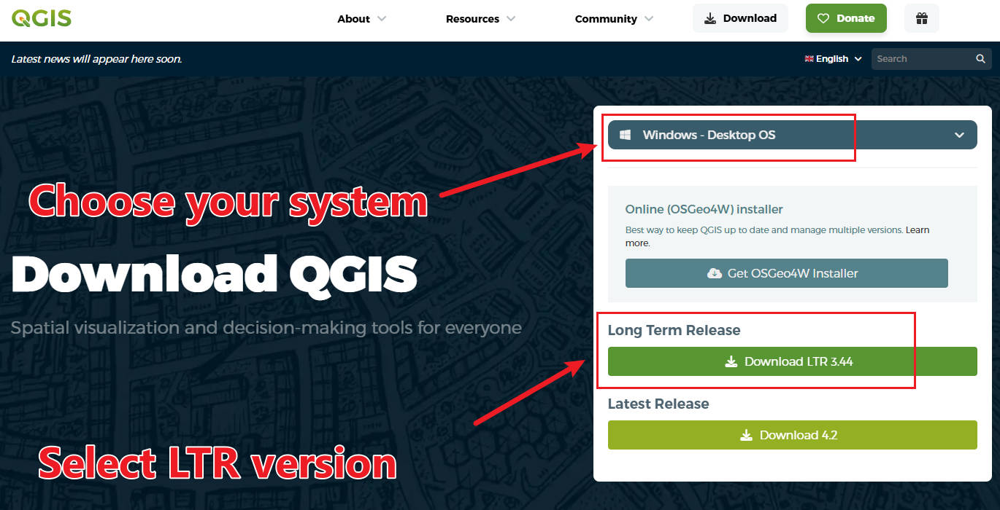
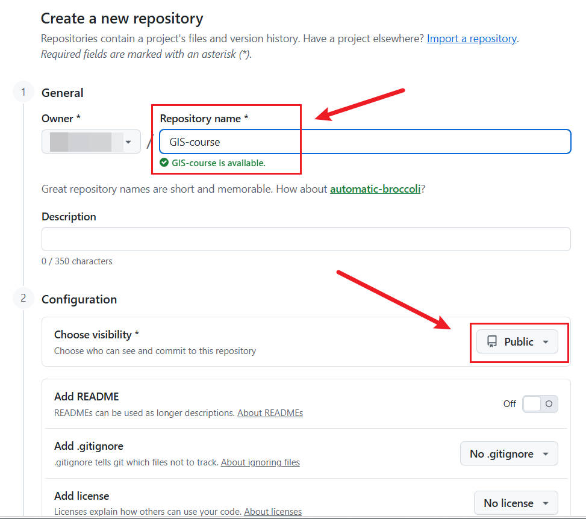
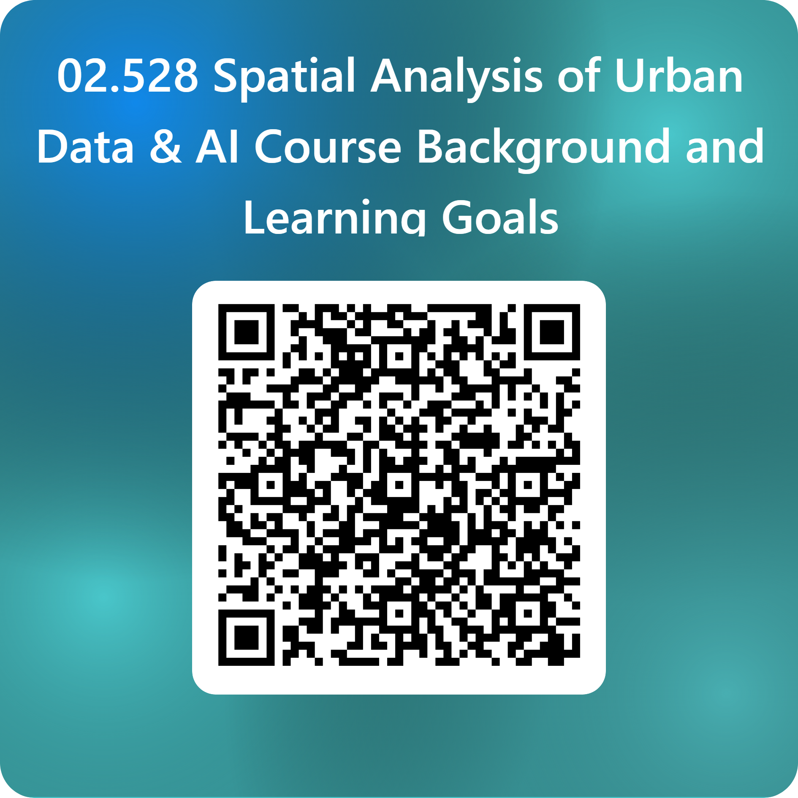
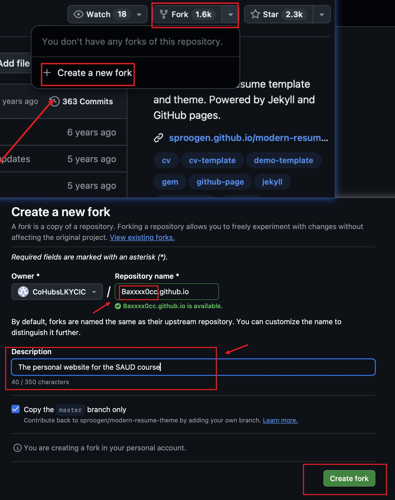
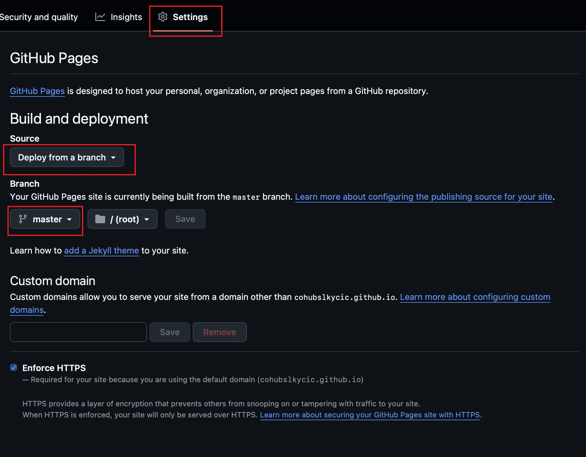
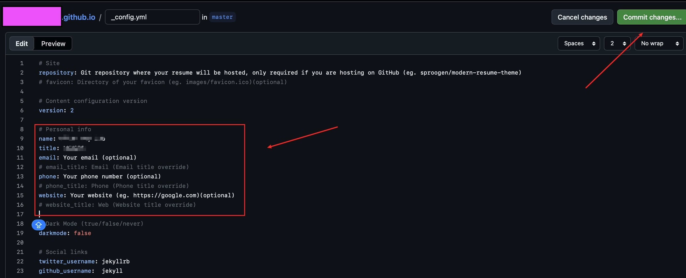
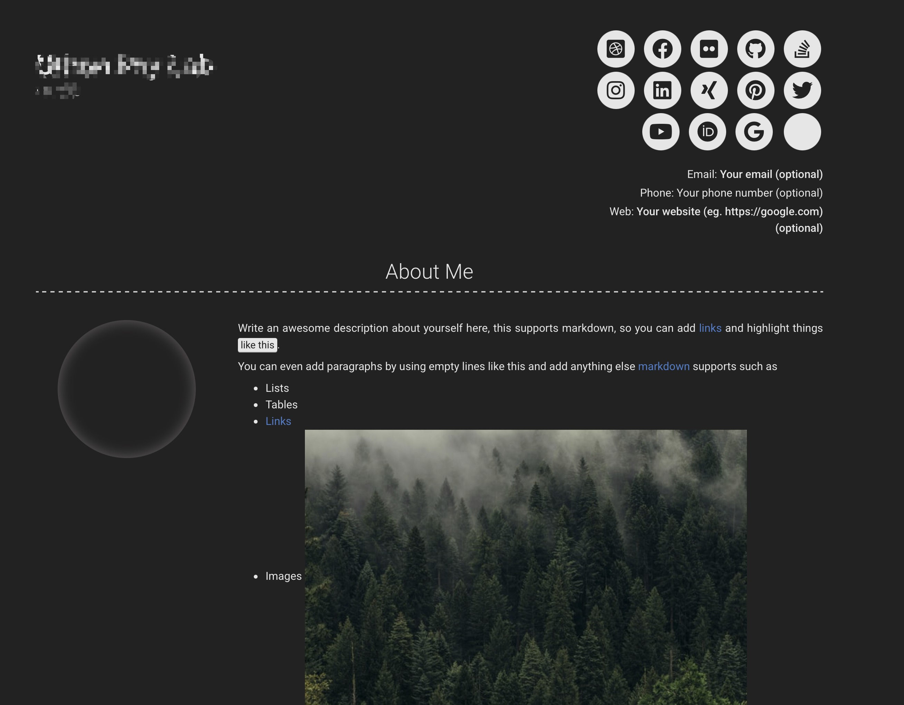

class: center <br> # Spatial Analysis of Urban Data [Bayi Li](mailto:barryli081@gmail.com) .toc-wrapper[ <div class="toc"> <a href="#definition_uds" class="toc-item">Introduction to Urban Data Analytics</a> <a href="week05_Cartography.html" class="toc-item">Cartographic Design</a> <a href="vector.html" class="toc-item">Spatial Analysis of Vector Data</a> <a href="raster.html" class="toc-item">Spatial Analysis of Raster Data</a> <a href="spdeng.html" class="toc-item">Spatial Data Integration and Feature Engineering</a> <a href="network.html" class="toc-item">Spatial Network Analysis</a> <a href="appliedgis.html" class="toc-item">Urban Studies and Applied GIS</a> <a href="cvurban.html" class="toc-item">Computer Vision and Urban Case Study</a> <a href="webmap.html" class="toc-item">Web-Based Spatial Visualisation</a> ] <!-- <a href="about.html" class="toc-item">About This Project</a> <a href="svg-spotlight.html" class="toc-item">Demo: SVG Feature Spotlight</a> </div> --> ??? The session will cover the fundamental concepts of spatial analysis, types of spatial data, and the formulation of related research questions in urban studies. In the following weeks, vector, raster, and network, three main types of spatial data, will be introduced, along with their respective analysis techniques and applications in urban contexts. --- name: tools ## Why QGIS, Python and GitHub? <div class="tool-grid"> <div class="tool-card"> <h3>QGIS</h3> <p class="tool-tag">Desktop GIS</p> <ul> <li>The leading <strong>open-source GIS software</strong>, free on Windows, macOS and Linux</li> <li>Large community and plugin ecosystem, widely used in research, government and industry</li> <li>Skills transfer directly to commercial tools such as ArcGIS</li> </ul> </div> <div class="tool-card"> <h3>Python</h3> <p class="tool-tag">Programming language</p> <ul> <li>The <strong>most widely used programming language</strong>, easy to learn and read</li> <li>Rich geospatial and data science libraries (GeoPandas, Shapely, Rasterio, scikit-learn)</li> <li>Makes analysis reproducible, automatable and scalable beyond point-and-click</li> </ul> </div> <div class="tool-card"> <h3>GitHub</h3> <p class="tool-tag">Code platform</p> <ul> <li>The <strong>most used platform for hosting and sharing code</strong></li> <li>Built on <strong>Git</strong>, so you can track, version and manage every change to your code</li> <li>Supports collaboration, portfolios and free web publishing via GitHub Pages</li> </ul> </div> </div> --- name: installation ## Week 0 Before the class .left_half[ - Install QGIS https://qgis.org/download/ - Explore the QGIS interface - Install Python - <a href="markdown.html?file=docs/Python_Setup_macOS.md" target="_blank"> View the Python installation instructions for macOS </a> - <a href="markdown.html?file=docs/Python_Setup_Windows.md" target="_blank"> View the Python installation instructions for Windows </a> ] .right_half[ <figure> <p></p> </figure> ] --- ## Week 0 Before the class .left_half[ - Register a GitHub account https://github.com/signup - Create a GitHub public repository name "GIS-course" - Send your the link of the repository in Microsoft Teams channel (e.g., https://github.com/Baxxxx0cc/GIS-course) - Verify you student status at https://github.com/education ] .right_half[ <figure> <p></p> </figure> ] --- .left_half[ ### Bayi Li [Online Profile](https://www.sutd.edu.sg/profile/li-bayi/) Trained across urban planning and geographical information science. His work integrates spatial analytics, machine learning, computer vision, and urban theory to examine mobility, public space, and environmental exposure in contemporary cities. ] .left_half[ ### Xiaohan Liu [Online Profile](https://www.sutd.edu.sg/profile/liu-xiaohan/) She is an urban researcher whose work combines urban planning, GIS, mobility and network analysis, and urban data science. Her research examines how built environments shape everyday mobility, public space use, health, environmental exposure, and social interaction, with a focus on creating more liveable and inclusive high-density cities. ] --- name: before-survey ## Short before-survey <figure class="image-70"> <p></p> <figsubcaption>Source: https://forms.cloud.microsoft/r/NwyC4irFdn</figsubcaption> </figure> --- ## Course policies ### Office hours and communication Office: LKYCIC / Online Office Hours: by appointment --- ## Course policies ### AI use policy This course teaches you to use AI alongside GIS. .left_half[ Permitted: - Generating, explaining, and debugging code - Getting unstuck on technical problems - Explaining a concept from the readings - Brainstorming and suggesting - Improving the writing you have drafted - Drafting documentation and code comments - Getting critical feedback on your own argument ] .right_half[ **NOT** permitted: - Submitting unchecked AI output - Unverified citations, DOIs, or author - Numbers, statistics, or findings that cannot be traced back to your data and code - Any AI-generated image as final delivery - Passing off generated prose as your own analysis in the individual report ] --- ## Course policies .left_half[ ### Attendance and participation - If you cannot attend a class, please inform the instructor in advance where possible. - Repeated absence may affect your participation assessment (10%). ] .right_half[ ### Late submission policy All assignments are to be submitted on time. Late submissions are **graded down 10% per day**. If something serious comes up, contact us before the deadline rather than after it. ] --- ## Course policies ### Assessment and grading **Two standards** govern everything you submit: (1) **Methodological transparency** Someone reading only your report and your repository should be able to tell exactly what you did and why, without asking you. - **Which data, exactly. ** Name the dataset, the issuing agency, the version or vintage, the download date, and the licence. - **Unit of analysis. ** Planning area, subzone, hexagonal grid, 200 m cell, or individual point. - **Filtering and exclusions. ** How many records you dropped, why, and what was left. - **Every parameter. ** Buffer distance, number of classes and classification scheme in a choropleth, confidence threshold on a model. --- ## Course policies ### Assessment and grading **Two standards** govern everything you submit: (2) **Reproducibility** Someone else, on a different machine, running your code, gets your numbers back. | Level | Meaning | Status in this course | | --- | --- | --- | | Re-runnable | Runs on your laptop, today | Bare minimum | | Reproducible | Runs on a clean machine, from raw data to final figures | **The course standard** | | Replicable | Another team could apply your method to a different dataset or city | What "reusable workflow" means | --- ## Course Structure and Focuses ### Spatial data foundations What spatial data is, where Singapore's open data comes from (data.gov.sg, LTA DataMall, OpenStreetMap), and how to get it analysis-ready: formats, coordinate systems, cleaning, and integration across sources. .course-structure[ | Week | Topics | |---|---| | Week 1 | Introduction to Urban Data Analytics | | Week 2 | [Urban Data Sources and Open Data in Singapore](data.html) | | Week 3 | [Introduction to Python in Urban Data Analytics](intro2python.html) | | Week 4 | [Spatial Data Processing and Cleaning](sdp.html) | | Week 9 | [Spatial Data Integration and Feature Engineering](spdeng.html) | ] --- ## Course Structure and Focuses ### Core spatial analysis Vector operations and spatial statistics, raster analysis, and network analysis for accessibility and routing. The methodological backbone. .course-structure[ | Week | Topics | |---|---| | Week 6 | [Spatial statistics and analysis of vector data](vector.html) | | Week 8 | [Spatial analysis of raster data](raster.html) | | Week 10 | [Network Analysis for Urban Systems](network.html) | ] <br> ### Cartographic and visual communication Turning analysis into maps people can read, from thematic map design through to interactive web-based visualization. .course-structure[ | Week | Topics | |---|---| | Week 5 | [Cartographic Design](Cartographic Design.html) | | Week 12 | [Web-Based Spatial Visualisation](webmap.html) | ] --- ## Course Structure and Focuses ### Critical use of GeoAI AI-assisted coding and computer vision on street-level and aerial imagery. .course-structure[ | Week | Topics | |---|---| | Week 3 | [Introduction to Python in Urban Data Analytics](intro2python.html) | | Week 11 | [Computer Vision and Urban Case Study](cvurban.html) | | Week 12 | [Web-Based Spatial Visualisation](webmap.html) | ] <br> ### Reproducible workflow practice Building a reusable, documented, open-source analytical workflow around a real Singapore urban question, as a team. .course-structure[ | Week | Topics | |---|---| | Week 10 | [Network Analysis for Urban Systems](network.html) | | Week 11 | [Computer Vision and Urban Case Study](cvurban.html) | | Week 12 | [Web-Based Spatial Visualisation](webmap.html) | | Week 13 & 14 | Final Project | ] --- ## Assessment The course combines continuous and summative assessment across the term. | Component | Weight | Period | |---|---|---| | Participation | 10% | Throughout the term | | Individual Assignment (Spatial Data Processing, Part I & II) | 20% | Weeks 3–9 | | Final group project presentation | 20% | Week 14 | | Final group project code | 20% | Week 14 | | Final individual report | 30% | End of term | The final group project accounts for 70% of the overall grade. --- name: geoai_data # Core data modalities in GeoAI .left_half[ 1. **Geospatial vector data** 2. **Images** 3. Knowledge graphs 4. Text 5. Trajectory data ... ] -- .right_half[ Selected data for this course: - Geospatial data - Vector data - Raster data - Network data - Imagery data ] .references[ - [On the Opportunities and Challenges of Foundation Models for GeoAI](https://dl.acm.org/doi/10.1145/3653070) ] --- name: definition_uds # Definition of Spatial Analysis **Quantitative analysis** of **spatial data** 1. **Quantitative analysis** 2. **spatial data** ??? Spatial analysis can be easily defined as quantitative analysis of spatial data. It can be disaggregated into two key components: quantitative analysis and spatial data. The former describes a general approach, while the latter specifies the type of data being analyzed. -- **Quantitative analysis**: Exploration of spatial data involves describing **patterns** and understanding the nature of underlying **relationships**. 1. **Patterns** 2. **Relationships** ??? Spatial analysis can be easily defined as quantitative analysis of spatial data. It can be disaggregated into two key components: quantitative analysis and spatial data. The former describes a general approach, while the latter specifies the type of data being analyzed. Let's first focus on quantitative analysis. In general, quantitative analysis of spatial data involves two main aspects: describing patterns and understanding relationships. --- ## Vector and Raster Data Spatial data is primarily represented using two major models: <div align="center"> <figure> <img src="imgs/vector_n_raster_presentation.png" width="60%"> <figcaption>Raster and vector representation of real world entities.</figcaption> <figsubcaption>Source: Unknown authour, https://gis.stackexchange.com/questions/7077/what-are-raster-and-vector-data-in-gis-and-when-to-use</figsubcaption> </figure> </div> --- ## Open-source ### **F**ree and **O**pen-**S**ource **S**oftware for **G**eospatial (**FOSS4G**) workflows - The Open Source Geospatial Foundation: https://www.osgeo.org/ - https://foss4g.org/ .left_half[ #### Open source "Open source starts off with a license that provides royalty free (re)use of software. Next, open source guarantees access to the source code for audit and modification and the ability to redistribute the software with no additional costs." ] .right_half[ #### Open data "Open Data applies the principles of free and open to geospatial data, allowing communities to collaborate on a data product." ] .references[ - [What is Open Source?](https://www.osgeo.org/about/what-is-open-source/) - [What is Open Data?](https://www.osgeo.org/about/what-is-open-data/) ] --- ## GIS Tools .left_half[ ### Open-source tools Flexibility ] .right_half[ ### Proprietary softwares <figure> <img src="imgs/raster/raster_creation_qgis.png" width="100%"> </figure> ] .references[ - [Stephen Chege: 7 Essential Open-Source Python GIS Tools Dominating Geospatial Data Science in 2026](https://medium.com/tierra-insights/7-essential-open-source-python-gis-tools-dominating-geospatial-data-science-in-2025-1a4fba4d4921) ] --- .right_half[ <figure> <img src="imgs/vector/create_vector_qgis.png" width="100%"> </figure> ] ## Vector with QGIS QGIS can create spatially-referenced vector data: --- ## Vector with QGIS It can also be used to produce drawings that are not spatially meaningful: <div align="center"> <figure> <img src="imgs/vector/vector_drawing_qgis.jpg" class="zoomable" id="ZoomableImage" alt="Data Structure Issue" width="60%"> <figcaption>Using QGIS to produce non-spatial drawings.</figcaption> <figsubcaption>Source: https://www.xiaohongshu.com/discovery/item/6904d0d600000000030377eb?source=webshare&xhsshare=pc_web&xsec_token=CBGXxowpqIt_s8GpdYLDW6OcD31ABfaSln-8xkjALawQE=&xsec_source=pc_share</figsubcaption> </figure> </div> --- .right_half[ <figure> <img src="imgs/raster/raster_creation_qgis.png" width="100%"> </figure> ] ## Raster with QGIS Raster layers need more parameters and structure, so QGIS uses specialized tools to ensure they’re correctly set up. You need to define resolution, extent, data type (e.g., integer, float), and sometimes initial values. -- <xL>You can also create drawing using raster layer if you want.</xL> --- ## Comparison: Vector and Raster Data Model Rule of Thumb: - Use vector for objects with **clear boundaries and relationships**. - Use raster for **continuous data** or when performing spatial modeling that requires **grid-based calculations**. | | | Raster | |Vector | |-------------|---------|---------------------------------------------|---------|------------------------------------------------------| |Advantages | * | Simple Data Structure | * | More compact | | | * | Efficiency in overlay operations | * | Efficiency in topology-based operations | | | * | Better representing high spatial variability| * | Better map visualisation | | | * | Widely used in remote sensing and image data| | | |Disadvantages| * | Less compact | * | More complex | | | * | Underrepresented topological relationship | * | Inefficient representation of high spatial variablity| | | * | Disadvantages in visualisation | * | Unable to handle image data | | | * | Less compact | | | --- ## Interconversion between Vector and Raster Data .left_half[ ### Vector to Raster Conversion (Rasterisation) <div align="center"> <figure> <img src="imgs/rasterize_qgis.png" width="72%"> </figure> </div> ] .right_half[ ### Raster to Vector Conversion (Vectorisation/Polygonisation) <div align="center"> <figure> <img src="imgs/polygonize_qgis.png" width="72%"> </figure> </div> ] .clear[ ] --- ## Spatial Patterns Patterns turn raw spatial data into meaningful geographic insight. <div align="center"> <figure> <img src="imgs/spatial_patterns.jpg" width="50%"> <figcaption>Different types of spatial patterns of points.</figcaption> <figsubcaption>Source: https://gisgeography.com/spatial-patterns/</figsubcaption> </figure> </div> ??? Taking this spatial points as an example, we can observe different types of spatial patterns, including random, clustered and uniform patterns. It is a way to describe how spatial phenomena are distributed in space. --- ## Spatial Relationships Topological spatial relations are fundamental constructs that describe how two or more geometric objects relate to each other. <div align="center"> <figure> <img src="imgs/spatial_relations.png" width="50%"> <figcaption>Different types of spatial relations based on two Polygon geometries.</figcaption> <figsubcaption>Source: Egenhofer et al. (1992) and https://pythongis.org/part2/chapter-06/nb/05-spatial-queries.html</figsubcaption> </figure> </div> ??? What is spatial analysis? --- ## Extended Definition of Spatial Analysis ### Spatial data analysis Understanding the **spatial distribution, patterns, and relationships** within the data. ### Spatial statistical analysis To test whether the spatial dataset exhibits **significant patterns or relationships**. Location is analysed as an attribute on top of conventional data analysis. ### Spatial modelling Models to **explain or predict spatial phenomena** by simulating real-world processes or evaluating different scenarios ### Spatial data manipulation **Creation, transformation, and management** of spatial data ??? Spatial analysis can be interpreted with different weights based on specfic context. --- ## Spatial Analysis: From Data to Wisdom .right_half[ <figure> <img src="imgs/DIKW_Pyramid.jpg" width="100%"> <figcaption>Data, Information, Knowledge, Wisdom (DIKW) Pyramid.</figcaption> <figsubcaption>Source: R. Ackoff (1989) and https://www.jeffwinterinsights.com/insights/dikw-pyramid</figsubcaption> </figure> ] Spatial analysis can reveal things that might otherwise be invisible – it can **make what is implicit explicit** <br> Spatial analysis adds to the value of geographic data and can **turn data into useful information** <br> Effective spatial analysis requires **an intelligent user**, not just a powerful computer <br> -- <xL>How can we compose a full process for acquiring wisdom through spatial analysis?</xL> --- ## Maps: A powerful tool of Storytelling --- ## From Exploration to Explanation Different spatial analysis projects have different aims, so the framework must align the aim with the methods. | | **Exploratory** | | **Descriptive** | | **Explanatory** | |-| ------------------------------------------------------------ |-| ------------------------------------------------------------ |-| ------------------------------------------------------------ | |*| Aim -> |*| Aim -> |*| Aim -> | | | To discover patterns, trends, or anomalies in spatial data without starting from a clear hypothesis. | | To characterise and summarise spatial phenomena, often through quantification and comparison. | | To understand causation or association between spatial variables and to test hypotheses. | |*| Example -> |*| Example -> |*| Example -> | | | “What spatial patterns emerge from mapping daily pedestrian movement across Singapore's park network?” | | “How does accessibility to hawker centres vary across housing types in Singapore?” | | “To what extent do covered linkways influence the frequency of pedestrian movement across urban neighbourhoods?" | <br> -- <xL>Thinking of the spatial data you have collected, what kind of research questions can you extract from them?</xL> --- <xL>Is your data sufficient to answer your research question?</xL> <br> <xL>Identify an appropriate spatial analysis method that aligns with both your data and research question.</xL> <br> .references[ - [QGIS Documentation](https://docs.qgis.org/latest/en/docs/) - [PyGIS: Spatial Queries](https://pythongis.org/part2/chapter-06/nb/05-spatial-queries.html) - [GISGeography: Spatial Patterns](https://gisgeography.com/spatial-patterns/) - [GIS StackExchange: Raster and Vector Data in GIS](https://gis.stackexchange.com/questions/7077/what-are-raster-and-vector-data-in-gis-and-when-to-use) ] --- name: practice_resume ## Practice: Your Personal Resume Page on GitHub .left_half[ Build a simple online resume in **15 minutes**, with **no coding and no installation**, everything happens in your web browser. We will copy an open-source template: [modern-resume-theme](https://github.com/sproogen/modern-resume-theme) (MIT licence) <br> You will learn to: - **Fork** (copy) a repository to your own account - **Edit** a file and **commit** the change - **Publish** a website for free with **GitHub Pages** ] .right_half[ <figure> <img src="https://raw.githubusercontent.com/sproogen/modern-resume-theme/master/screenshot.png" width="100%"> <figcaption>The resume page you will create.</figcaption> <figsubcaption>Source: https://github.com/sproogen/modern-resume-theme</figsubcaption> </figure> ] --- .left_half[ ## Practice: Step by Step **Step 1 — Fork:** open https://github.com/sproogen/modern-resume-theme and click **Fork** (top right) - Set the repository name to **`your-username.github.io`** (e.g., `Baxxxx0cc.github.io`), then click **Create fork** ] .right_half[ <figure> <p></p> <figcaption>How to fork a repository.</figcaption> </figure> ] --- .left_half[ ## Practice: Step by Step **Step 2 — Turn on the website:** in your new repository, go to **Settings → Pages** - Under *Build and deployment*, choose **Deploy from a branch**, select **`master`** and **`/ (root)`**, then **Save** ] .right_half[ <figure> <p></p> <figcaption>How to turn on the website.</figcaption> </figure> ] --- .left_half[ ## Practice: Step by Step **Step 3 — Add your information:** open the file **`_config.yml`** and click the ✏️ **pencil icon** - Replace `Your Name`, `Your job title`, `email`, `about_content`, `Experience`, `Education` with your own details - Delete the lines you do not need (e.g., social media accounts you do not have) - Click **Commit changes** ] .right_half[ <figure> <p></p> <figcaption>How to commit a change.</figcaption> </figure> ] --- .left_half[ ## Practice: Step by Step **Step 4 — View your page:** wait 1–2 minutes, then visit **`https://your-username.github.io`** - Check progress in the **Actions** tab (green ✔ = published) - Still **404**? A forked repository is only published **after your first commit** (Step 3). If Actions asks, click **"I understand my workflows, go ahead and enable them"** ] .right_half[ <figure> <p></p> <figcaption>How the page looks.</figcaption> </figure> ] --- ## Practice: Tips and Submission .left_half[ **Tips** - Keep the **indentation** (spaces) in `_config.yml` unchanged, a wrong space can break the page - Text after `#` is a comment and will not be shown - If the page does not update, check the **Actions** tab for a red ✘ error message - Profile photo (optional): upload your photo into the `images` folder and set `about_profile_image: images/your-photo.jpg` ] .right_half[ **Submission** - Post the link to your resume page (e.g., `https://Baxxxx0cc.github.io`) in the Microsoft Teams channel <br> **Going further (optional)** - Add a *Projects* section and link your **GIS-course** repository - Try `darkmode: true` ] --- name: appendix_git ## Appendix: Install Git on Your Computer **Take-home task:** so far we edited files on the GitHub website. For real projects, keep your code on **your own computer** and use **Git** to track changes and send them to GitHub. **The everyday Git loop**: `edit` → `commit` → `push` .left_half[ 1. **Install Git** <br> <a href="markdown.html?file=docs/Git_Setup.md" target="_blank"> View the step-by-step Git setup guide (macOS and Windows) </a> - macOS: run `git --version` in Terminal and click **Install** if prompted - Windows: download from https://git-scm.com/downloads/win, keep default options ] .right_half[ 2. **Tell Git who you are** - `git config --global user.name "Your Name"` - `git config --global user.email "you@example.com"` 3. **Clone** your resume repository in VS Code (*Git: Clone → Clone from GitHub*) 4. **Edit → Commit → Push** a small change and watch your page update ]